2023华东题库(2069题)
1201~1400
FCOM10048
按压中央仪表板上面MFD面板里的SYS电门
A、在上显示组件上显示液压系统的数据
B、在内显示组件上显示液压系统的数据
C、在下显示组件上显示液压系统的数据
D、松开电门时相关的显示消失
C
FCOM10049
下面哪个不属于大气数据惯性系统的组成部分
A、静压孔
B、飞行FCC
C、大气数据组件
D、皮托管
B
FCOM10050
速度带上的速度趋势线箭头所指示的预达空速是根据以下那个因素来计算？
A、当前的空速和N1
B、当前的空速和加速度
C、当前的地速和N1
D、当前的地速和加速度
B
FCOM10051
若当前空速等于最小机动速度时，空速读数框变为
A、白色
B、绿色
C、琥珀色
D、洋红色
C
FCOM10052
速度带上琥珀色的最大机动速度在以下哪种情况下可能显示?
A、高高度，飞机总重较大时
B、低高度，飞机总重较大且襟翼放出至着陆襟翼时
C、高高度，飞机总重较大且襟翼收上时
D、低高度，飞机总重较大且襟翼收上时
C
FCOM10053
速度带上琥珀色的最大机动速度表示什么含义?
A、Vmo/Mmo
B、高度抖杆速度
C、所指示的空速可提供高速抖振速度1.3g的机动能力
D、所指示的空速可提供高速抖振速度1.1g的机动能力
C
FCOM10054
主飞行显示上什么时候开始显示马赫数?
A、当空速大于或等于0.5马赫时
B、当空速大于或等于0.4马赫时
C、当空速大于或等于0.6马赫时
D、一直都显示
B
FCOM10055
以下哪种情况会在主飞行显示的速度带上显示白色的游标5?
A、发动机方式控制面板上的速度基准电门在游标5位时
B、发动机方式控制面板上的N1调定电门在“BOTH”位
C、发动机方式控制面板上的速度基准电门在“AUTO”位
D、发动机方式控制面板上的N1调定电门在“VR”位
A
FCOM10056
以下哪种情况会显示当前襟翼位置的襟翼机动速度游标？
A、起飞期间，以襟翼1起飞时
B、襟翼手柄移至襟翼30或40时
C、巡航期间，巡航高度为20000英尺以上时
D、着陆期间，速度小于Vref+4
A
FCOM10057
如果飞机使用襟翼5起飞，并在起飞后保持襟翼5做本场训练，速度带上白色的 V2+15游标什么时候消失？
A、离地后
B、速度上升至170海里/小时时
C、实际速度达到V2+15时
D、机组在CDU上选择Vref后
D
FCOM10058
速度带上的V1和VR什么时候开始显示？
A、在CDU里输入V1和VR后
B、轮子开始转动时
C、速度大于60海里/小时前
D、速度大于80海里/小时后
D
FCOM10059
俯仰限制符号在以下什么情况下才显示？
A、当襟翼放出时或襟翼收上低速飞行时
B、仅当起落架放下时
C、仅在起飞阶段出现
D、高度低于20000英尺时
A
FCOM10060
姿态指示上的坡度指针什么情况下开始变成琥珀色？
A、当所指示的坡度角为30度或30度以上时
B、当所指示的坡度角为35度或35度以上时
C、当所指示的坡度角为45度或45度以上时
D、当所指示的坡度角为60度时
B
FCOM10061
正常着陆过程中，现襟翼5,机组在CDU的进近基准页面上选择襟翼30为着陆襟翼，速度带上的最大机动速度带什么时候消失？
A、速度达到Vref时
B、速度达到Vref+15时
C、襟翼收到15时
D、襟翼放到30时
D
FCOM10062
在ILS进近过程中，若发现航向道指针变为洋红色的实心菱形，表明
A、收到了航道信号
B、现在距中心2.5点范围内
C、航向道截获了
D、航向道偏离过大
B
FCOM10063
ILS进近过程中，LNAV接通且LOC预位，在低于哪个高度时，若LOC没有捕获，航向道刻度就会变成琥珀色且指针闪亮？
A、距地面高度500英尺
B、距地面高度800英尺
C、距地面高度1000英尺
D、距地面高度1500英尺
C
FCOM10064
水平导航接通且航道预位,当偏离略大于多少个点时，航向道的刻度开始变为扩展式？
A、3/4个点
B、1/2个点
C、1个点
D、1.5个点
B
FCOM10065
什么情况下会显示跑道的符号？
A、航向道信号可用，并且指针可见
B、无线电高度低于2500英尺
C、A和B条件满足
D、A 或 B
C
FCOM10066
若当前高度为0英尺以下，高度带上当前高度的指示为:
A、空白
B、随机数
C、负值
D、零
C
FCOM10067
什么时候主飞行显示上的气压调定值显示框起的琥珀色？
A、数值已调定并且飞机爬升到过渡高度以上
B、标准气压已调好并且飞机下降到过渡高度层以下时
C、在电子飞行仪表系统控制面板上选择毫巴为单位指示气压调定值时
D、A 或 B
D
FCOM10068
以下哪种情况下高度带显示绿色的阴影？
A、选择QNH时
B、选择STD时
C、选择QFE时
D、预选气压调定值时
C
FCOM10069
ILS进近过程中，副驾驶观察到主飞行显示上DH区域为空白，并且机长的主飞行显示上显示Radio 300,这种情况说明
A、副驾驶的无线电高度失效
B、副驾驶的DH显示失效
C、应该按下复位电门
D、副驾驶EFIS控制面板上的最低标准高度选择小于零
D
FCOM10070
高度带上的着陆高度基准杆何时显示为琥珀色？
A、高于着陆高度500至1000英尺
B、高于着陆高度0至500英尺
C、低于着陆高度500至1000英尺
D、低于着陆高度0至500英尺
B
FCOM10071
垂直速率指示器显示哪个系统的垂直速率？
A、惯性基准系统
B、飞行管理计算机
C、大气数据计算机
D、飞行操纵计算机
A
FCOM10072
垂直速率指示器什么时候会开始显示数字式的垂直速率?
A、当垂直速率大于800英尺/分钟时
B、当垂直速率大于600英尺/分钟时
C、当垂直速率大于400英尺/分钟时
D、当垂直速率大于200英尺/分钟时
C
FCOM10073
当主飞行显示上的航向基准显示为“TRU”时，若飞机以大于每分钟___英尺的下降率下降超过___英尺时，在TRU周围出现一个琥珀色外框；外框闪烁持续___秒后变成稳定的琥珀色。
A、800,2000,10
B、800,2000,20
C、1000,2000,10
D、1000,2000,20
A
FCOM10074
若PFD（主飞行显示）上显示SPD LIM（速度限制）故障旗，可能的原因是
A、所选的空速数据无效
B、抖杆器警告失效
C、所选择的速度超过了最大速度
D、FMC中输入了限制速度
B
FCOM10075
若PFD上显示航向故障旗，表示
A、航向信息失效
B、姿态显加失效
C、FCC（飞行控制计算机）失效
D、FMC失效
A
FCOM10076
顶板的显示控制面板选择电门在正常位，若机长的PFD出现“DISPLAYS CONTROL PANEL”的信息，说明
A、机长的EFIS（电子飞行仪表系统）控制面板失效
B、副驾驶的EFIS（电子飞行仪表系统）控制面板失效
C、左侧DEU失效
D、右侧DEU失效
A
FCOM10077
顶板的显示控制面板选择电门在“NORMAL”位，若机长的EFIS控制面板失效会出现哪些故障信息，
A、机长侧出现DSPLY SOURCE
B、副驾驶侧出现 DISPLAYS CONTROL PANEL
C、机长侧出现高度故障旗
D、副驾驶侧出现高度故障旗
C
FCOM10078
ND的哪种显示方式的顶部窗口不显示航向？
A、MAP
B、APP
C、VOR
D、PLAN
D
FCOM10079
ND的哪种显示方式的顶部窗口以真北向上的？
A、MAP
B、APP
C、PLAN
D、VOR
C
FCOM10080
若ND上出现琥珀色的“ WXR RANGE DISAGREE ”信息，表明
A、电子飞行仪表系统控制面板所选范围与TCAS显示范围不一致
B、电子飞行仪表系统控制面板所选范围与气象雷达显示范围不一致
C、电子飞行仪表系统控制面板所选范围与地图显示范围不一致
D、气象雷达出现显示故障
B
FCOM10081
在以下哪种情况下，ND上会显示琥珀色的“EFIS MODE/NAV FREQ DISAGREE ”信息。
A、VOR频率调谐后选择PLAN方式
B、VOR频率调谐后选择APP方式
C、ILS频率调谐后选择APP方式
D、ILS频率调谐后选择LOC方式
B
FCOM10082
ND上出现了"WXR ATT”信息，下面哪个说法是对的？
A、气象雷达天线稳定性关闭
B、气象雷达校准故障
C、气象雷达天线姿态不稳定
D、气象雷达的风切变探测功能失效
C
FCOM10083
下面那种方式显示气象雷达和TCAS系统？
A、VOR CTR
B、APP CTR
C、MAP CTR
D、PLAN
C
FCOM10084
在MAP方式，三个范围圈迭加在地图上，此时第二个范围圈上数字 为40,则在EFIS控制面板上选择的范围为
A、20NM
B、40NM
C、80NM
D、160NM
C
FCOM10085
EFIS的控制面板在
A、头顶板上
B、遮光板上
C、中央操纵台上
D、后电子面板上
B
FCOM10086
下面那种方式可显示航路外的航路点?
A、VOR
B、APP
C、MAP
D、PLAN
C
FCOM10087
在地图方式，若选择的范围为640海里时，那么气象雷达回波限制为多少？
A、无限制
B、160海里
C、320海里
D、640海里
C
FCOM10088
如果上DU失效,上DU显示空白,主发动机显示自动移至____上,并显示密集发动机显示.
A、下DU
B、机长外侧DU
C、机长内侧DU
D、副驾驶内侧DU
A
FCOM10089
关于显示在导航显示器上的“位置趋势矢量"下面哪一种叙述是正确的?
A、此“位置变化向量线”仅在PLAN方式下出现
B、APP以及VOR显示方式下出现。
C、“位置趋势矢量”代表对飞机在30、60和90秒后的位置预测。
D、代表飞机俯仰姿态
C
FCOM10090
下列关于PFD速度带上最小速度带（红黑）描述正确的是（ ）？
A、飞机的速度到达速度带的顶端时，飞机抖杆；
B、飞机的速度进入速度带后，飞机抖杆；
C、飞机的速度到达速度带的底端时，飞机抖杆；
D、飞机的速度通过速度带的顶端后，飞机抖杆；
A
FCOM10091
飞机的姿态信息来自于（ ）？
A、ADIRS；
B、FMC；
C、FCC；
D、SMYD；
A
FCOM10092
如果出现“DISPLAYS CONTROL PANEL”信息，当顶板的显示控制面板选择“BOTH ON 2”位后 ，信息消失，说明（ ）？
A、副驾驶侧的EFIS控制面板失效
B、机长侧的EFIS控制面板失效
C、机长和副驾驶的EFIS控制面板都失效
D、机长和副驾驶的EFIS控制面板均可正常使用
B
FCOM10093
PFD出现琥珀色的CDS FAULT信息时，飞机是否可以放行。
A、不可以放行
B、可以放行
C、如果在启动好一台发动机后出现，可以放行
D、如果在启动好两台发动机后出现，可以放行
A
FCOM10094
如果将主面板DU电门选择外侧PFD，下列描述正确的是？
A、外侧DU显示PFD，内侧DU显示空白
B、内侧DU显示PFD，外侧DU显示空白
C、外侧DU和内侧DU都显示PFD
D、以上说法都不对
A
FCOM10095
当PFD上出现INSTR SWITCH信息时，下列描述正确的是
A、机长和副驾驶的显示正在使用相同的IRU 数据源
B、机长和副驾驶的显示正在使用不同的IRU 数据源
C、该信号牌的显示与顶板上的IRS电门位置无关
D、将顶板上的IRS电门位置移动到BOTH ON L或BOTH ON R后，该信号牌消失
A
FCOM10096
当CDU失效时，通过哪个面板可以设置起飞或着陆速度？
A、EFIS控制面板
B、速度基准选择器
C、显示源控制面板
D、MCP板
B
FCOM10097
当皮托管堵塞时，受到影响的仪表指示是（ ）？
A、高度表
B、空速表
C、垂直速率表
D、姿态
B
FCOM10098
下列关于无线电高度指示描述正确的是（ ）？
A、飞机的海平面高度
B、飞机离地面的实际高度
C、飞机的气压高度
D、飞机的座舱高度
B
FCOM10099
当PFD右上角出现闪烁MM时，说明（ ）?
A、飞机正在飞越外指点标
B、飞机正在飞越中指点标
C、飞机正在飞越内指点标
D、飞机正在穿过最低下降高度
B
FCOM10100
如果在EFIS上选择计划方式，主要用于（ ）?
A、飞行中在ND上显示导航信息
B、检查飞行航路
C、飞行中在ND上显示航迹、航向和位置数据信息
D、飞行中在ND上显示气象雷达信息
B
FCOM10101
按压EFIS 控制面板上的TERR电门后，下列哪种方式不显示地形数据（ ）？
A、中心地图方式
B、扩展进近或VOR方式
C、计划方式
D、扩展地图方式
C
FCOM10102
当CDU草稿栏显示“CHECK FMC FUEL QUANTITY ”信息时，说明（ ）？
A、预计到达目的地机场的剩余燃油少于900 公斤；
B、FMC 接收来自燃油量指示系统的燃油数据失效；
C、FMC 探测到意外的燃油量下降。
D、FCC 探测到意外的燃油量下降。
C
FCOM10103
在空中,当速度基准电门选择“Vref”位时,显示是（ ）？
A、空白;
B、输入无效;
C、人工调定的着陆基准速
D、FMC自动提供的基准空速;
C
FCOM10104
当执行ILS进近时，机长和副驾驶的下滑道偏差告警自测系统在多少无线电高度时预位？（ ）?
A、800英尺无线电高度
B、1000英尺无线电高度
C、1500英尺无线电高度
D、2500英尺无线电高度
C
FCOM10105
1.3G机动能力对应的空速是指（ ）？
A、25度坡度、襟翼收上、飞机在平飞阶段的最大机动速度
B、15度坡度、襟翼收上、飞机在任何阶段的最大机动速度
C、30度坡度，襟翼放出、飞机在任何阶段的最大机动速度
D、40度坡度，襟翼收上、飞机在平飞阶段的最大机动速度
D
FCOM10106
中央仪表板上速度基准选择器游标5用于选择的速度是（ ）?
A、V1
B、VR
C、Vref
D、任意速度;
D
FCOM10107
俯仰姿态刻度的增量是（ ）?
A、1度
B、1.5度
C、2度;
D、2.5度;
D
FCOM10108
关于ND上飞行计划航路的颜色，说法错误的是________
A、有效（洋红色）
B、更改（白色）
C、未生效的（蓝绿色）
D、偏置（琥珀色）
D
FCOM10109
在什么情况下，ND上出现TCAS OFF指示
A、TCAS/ATC方式电门不在 TA ONLY或 TA/RA位时
B、TCAS测试时
C、TCAS故障时
D、活动通告（琥珀色）或措施通告（红色）超出所选的显示范围
A
FCOM10110
关于速度参考选择器（外圈）的使用方法，错误的是________
A、AUTO——通过FMC 自动提供参考空速和全重
B、V1——在地面人工设定决断速度；在空中显示输入无效（INVALID ENTRY）
C、VR——在地面人工设定抬轮速度；在空中显示输入无效（INVALID ENTRY）
D、WT——通过FMC 自动提供全重
D
FCOM10111
按压EFIS面板上的DATA开关，会在ND上看到的指示为________
A、只会显示每一个生效航路点的高度限制
B、会显示每一个生效航路点的高度限制以及预计到达时间
C、只会显示每一个生效航路点的预计到达时间
D、只显示现飞航路点的高度限制以及预计到达时间
B
FCOM10112

如图FCOM10-02，地形（TERR）在________方式下不显示GPWS生成的地形数据。
A、MAP与中央MAP
B、VOR
C、APP
D、PLAN
D
FCOM10113
EFIS方式选择在________时，ND上出现白色飞机符号，指示沿飞行计划航路的实际位置和航迹。
A、APP
B、VOR
C、MAP
D、PLAN
D
FCOM10114
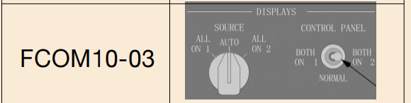
如图FCOM10-03，显示控制面板开关BOTH ON 1表示________
A、两侧的显示都由机长侧的EFIS 控制面板控制
B、左EFIS 控制面板控制机长的显示器，右EFIS 控制面板控制副驾驶的显示器
C、两侧飞行员的显示都由副驾驶的EFIS 控制面板控制
D、右EFIS 控制面板控制机长的显示器，左EFIS 控制面板控制副驾驶的显示器
A
FCOM10115

如图FCOM10-04，显示源选择在AUTO位，表示________
A、选择机长的DEU 控制所有6 个DU的显示
B、1号显示电子组件（DEU）控制机长外侧、内侧和上显示组件；2号DEU 控制副驾驶外侧、内侧和下显示组件
C、2号显示电子组件（DEU）控制机长外侧、内侧和上显示组件；1号DEU 控制副驾驶外侧、内侧和下显示组件
D、选择副驾驶的DEU 控制所有6 个DU的显示
B
FCOM10116
临近活动的TCAS符号是：
A、一个红色方块
B、一个琥珀色圆圈
C、一个白色实心菱形
D、一个白色空心菱形
C
FCOM10117
显示选择面板上所有电门均放置在正常位，此时如果系统探测到一部外侧显示组件失效，会发生什么？
A、失效的外侧显示组件空白，主飞行显示自动移动到上显示组件上
B、外侧显示组件信息自动转到中央下DU显示组件上
C、失效的外侧显示组件空白，主飞行显示自动移动到内侧显示组件上
D、外侧显示组件故障不提供自动转换功能，需要人工选择显示转换
C
FCOM10118
飞行过程，ND出现“WXR FAIL”，说明：
A、气象雷达失效
B、气象雷达姿态不在正常位
C、ND显示故障无法提供气象显示
D、气象雷达校准故障
A
FCOM10119
如果气象雷达校准故障，ND上显示信息为：
A、WXR FAIL
B、WXR STAB
C、WXR WEAK
D、WXR ATT
C
FCOM10120
关于CDS FAULT信息，下列描述正确的是？
A、仅在地面，两台发动机起动后出现
B、说明PFD显示故障，不可放行
C、地面或者空中均可能出现
D、仅在地面启动第二台发动机前显示
D
FCOM10121
在ND上出现“OFF SCALE”信息，表示：
A、地图超出显示范围信息
B、ND距离环选择不合适
C、气象雷达超出HSI的显示范围
D、TCAS超出显示范围信息
D
FCOM10122
使用CDU结合ND显示检查飞行的航线（航路点），建议将显示方式选择电门置于__。
A、地图方式
B、中心地图方式
C、计划方式
D、中心计划方式
C
FCOM10123
速度带在起飞阶段提供V2+15速度显示的目的是：
A、是单发爬升参考速度
B、是该构形条件下的最大爬升梯度速度
C、所有起飞襟翼位置起飞时保持的最小机动速度或收襟翼的起始速度
D、是该构形条件下的最小爬升梯度速度
C
FCOM10124
ADI上的扩展航向道指示，一个长方形代表偏离：
A、1个点
B、2/3个点
C、3/5个点
D、1/2个点
D
FCOM10125
ADI上的最低标准基准无线电高度，在最后进近阶段满足条件时颜色由绿色变为琥珀色。之后发生什么条件情况不会恢复为绿色指示？
A、复飞时通过所选最低高度以上75英尺的高度
B、接地时
C、按压电子飞行仪表系统控制面板的复位电门后
D、复飞时通过所选的最低高度时
A
FCOM10126
ND上显示的航路为湖蓝色，表明：
A、对现用航路修改的航路
B、现用的航路
C、起飞前输入计划时未生效的航路
D、备份航路
C
FCOM10127
正常情况下，发动机的主要参数在哪里显示？
A、外侧显示器
B、内侧显示器
C、上显示器
D、下显示器
C
FCOM10128
当下滑道信号不可用且航迹和MCP向台航道相差__度以上（背台）时下滑道指针不显示。
A、30
B、60
C、90
D、不确定，还需考虑距离
C
FCOM10129
在CDU中输入全重或速度基准选择电门调定起飞全重之后，速度带显示__。
A、襟翼全收上UP空速游标
B、起飞襟翼对应的机动速度
C、按显示的襟翼位置指示襟翼机动速度
D、起飞设定襟翼的最小/最大机动速度
C
FCOM10130
EXCESS DATA信息的显示说明：
A、FMC计算信息量过多出现数据无法处理
B、CDU输入信息过快或者过多导致无法完成计算显示
C、向主显示系统输入的地图信息量过多而无法显示。
D、说明主显示系统设定范围过小，导致信息过多无法显示。
C
FCOM10131
当出现EXCESS DATA信息，建议飞行组：
A、减少对FMC和CDU的输入，降低计算处理信息。
B、删除非必要的航路限制（例如高度、速度限制等信息）
C、取消当前非必要EFIS选择信息（例如STA、WPT、ARPT、DATA、POS等）。
D、增大显示范围
C
FCOM10132
ND上显示的航向来自__。
A、FMC
B、VHFNAV接收机
C、无线电距离磁指示器
D、由FMC或大气数据惯性基准系统提供
D
FCOM10133
下列哪一选项可以显示总温(TAT)。
A、左（右）前面板上
B、CDU上
C、中央仪表板上显示
D、前电子面板上
C
FCOM10134
TCAS中，在ND上出现“■”符号代表：
A、措施通告
B、咨询通告
C、附近飞机
D、其它飞机
A
FCOM10135
关于导致驾驶舱内飞行记录器面板上的“OFF"灯亮的原因，以下说法不正确的是
A、当记录器没有电时
B、当记录器测试无效时
C、当输入数据失去或有故障时
D、双发关车以后
D
FCOM10136
关于AOA不一致警戒（琥珀色的AOA DISAGREE），下列说法正确的是
A、指示机长（左）和副驾驶（右）的AOA 值相差5度以上且持续5秒钟以上
B、指示机长（左）和副驾驶（右）的AOA值相差5度以上且持续10秒钟以上
C、指示机长（左）和副驾驶（右）的AOA值相差10度以上且持续5秒钟以上
D、指示机长（左）和副驾驶（右）的AOA值相差10度以上且持续10秒钟以上
D
FCOM10137
大气数据惯性基准系统的主要组成部分是由：几部大气数据惯性基准组件？几部大气数据模块？几部惯性系统显示组件？几部双模式选择组件？几个静压孔？ 几套皮托管探头？ 几套迎角探测器？几套全温探头？共同组成。
A、2,4,1,1,6,3,2,1
B、1,2,1,1,3,3,2,1
C、1,4,1,1,6,2,2,2
D、2,4,2,1,4,3,2,1
A
FCOM10138
大气数据计算系统的飞行仪表的故障是由( )判断。
A、飞行仪表上指针的指示
B、飞行仪表上故障旗出现
C、主用仪表与备用仪表的比较
D、主警告信号牌或者CDU页面上的故障显示
B
FCOM10139
DU显示被自动或人工转换至单部显示电子组件源，导致：
A、相关主警告信号牌亮起
B、主警告信号牌亮起且主飞行仪表显示琥珀色FAULT
C、主飞行仪表显示琥珀色DSPLY SOURCE信息
D、主飞行仪表显示琥珀色MAINT
C
FCOM10140
如主飞行仪表左下角显示 CDS MAINT 信息，此时能否放行？
A、如在发动机启动后出现，可以放行，在启动前不可以放行
B、发动机启动后，若该信息可以消除，可以放行，否则不可以放行
C、不可以
D、可以放行
D
FCOM10141
六块液晶显示器上，可以按需调整显示内容，发动机参数可以调到外侧显示器上吗？
A、地面可以
B、空中可以
C、空中、地面都可以
D、空中、地面均不可以
D
FCOM10142
在飞行中，当全静压系统的静压阻塞，会使
A、升降速度表指示飞机的升降速度增大
B、升降速度表指示飞机的升降速度减小
C、飞机有上升或下降时，升降速度表指示总是为0
D、升降速度表会发生非预期的指示
C
FCOM10143
关于垂直速度表：
A、范围是正负4000英尺每分
B、信号来源于大气数据计算机
C、信号来源于惯性基准系统
D、信号来源于飞行控制计算机
C
FCOM10144
备用地平仪的信号来源于
A、信号来源于惯性基准系统
B、信号来源于大气数据计算机
C、自主电驱动
D、自主气驱动
C
FCOM10145
速度带上的V1，V2数据来源于：
A、FMC
B、ADS
C、IRS
D、AFCS
A
FCOM10146
下面说法错误的是
A、正在修改的航路是白色的
B、生效的航路是粉红的
C、非现用的航路是蓝色的
D、现用的航路是蓝色的
D
FCOM10147
TCAS 中，在HSI 上出现“◆”符号代表：
A、决断咨询
B、交通咨询
C、附近飞机
D、其它飞机
C
FCOM10148
当与另一架飞机相距最近的相遇点多少秒时，TCAS 产生决断咨询RA？
A、15秒
B、20秒
C、25秒
D、40秒
C
FCOM10149
ADI上显示的GS(地速)来自：
A、动静压系统
B、ADC
C、惯性基准系统
D、大气数据计算机
C
FCOM10150
当FMC失效后，对于HSI的显示，下列哪个说法是对的?
A、地图方式的显示不受影响
B、VOR/APP方式的显示不受影响
C、导航方式的显示不受影响
D、方式选择旋钮不工作了
B
FCOM10151
HSI的哪些显示方式不能显示气象雷达?
A、中心地图、计划
B、计划、中心进近、中心VOR
C、扩展的进近和VOR、中心进近和VOR
D、扩展地图
B
FCOM10152
在ADI上上下移动的附仰极限符号来自：
A、各自的飞行计算机
B、FMC
C、各自的失速计算机
D、进地警告计算机
C
FCOM10153
飞机的全静压系统的全压会对哪些仪表产生影响
A、航向仪表
B、空速表
C、气压高度表
D、升降速率表
B
FCOM10154
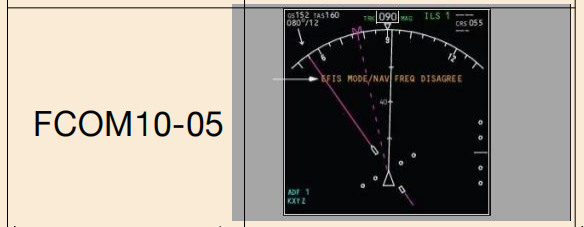
如图FCOM10-05，与左侧箭头所指的警告不相符的情况是
A、选择了进近（APP）并调谐了一个VOR 频率
B、选择了VOR并调谐了一个ILS频率
C、右上角的DME显示和ILS/VOR频率显示虚线
D、在中央APP和中央VOR方式下不显示该信号牌
D
FCOM10155
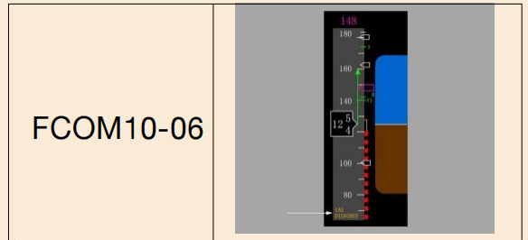
如图FCOM10-06，箭头指示的警告是________
A、空速误差警戒，FMC检测到指示空速不正确
B、空速不一致警戒，连续5秒钟机长和副驾驶的空速指示误差超过5 海里/小时
C、空速不一致警戒，连续5秒钟机长和备用仪表的空速指示误差超过10海里/小时
D、空速不一致警戒，连续10秒钟机长和备用仪表的空速指示误差超过10海里/小时
B
FCOM10156
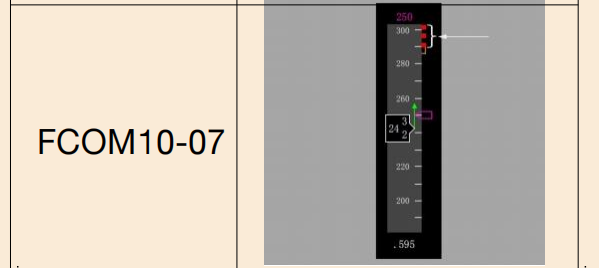
如图FCOM10-07所示，色带的底部指示最大操作速度，该指示速度不受哪些速度限制
A、Vmo/Mmo
B、起落架标牌速度
C、襟翼标牌速度
D、最大机动速度
D
FCOM10157
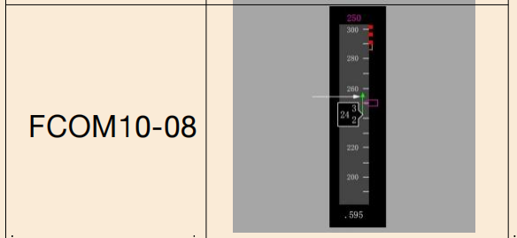
如图FCOM10-08，所示速度带，绿色箭头含义是________
A、速度趋势矢量,箭头的尖端指示基于当前空速和加速的后5秒的预计空速
B、速度趋势矢量,箭头的尖端指示基于当前空速和加速的后10秒的预计空速
C、速度趋势矢量,箭头的尖端指示基于当前空速和加速的后20秒的预计空速
D、速度趋势矢量,箭头的尖端指示基于当前空速和加速的后30秒的预计空速
B
FCOM10158
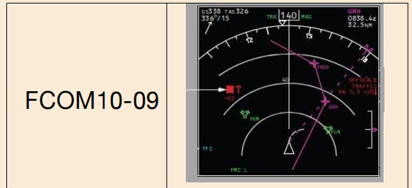
如图FCOM10-09，左侧白色箭头所指标志的含义为________
A、TCAS活动通告（TA）空中活动位于下方，其爬升率不小于500英尺/分
B、TCAS活动通告（TA）空中活动位于上方，其下降率不小于500英尺/分
C、TCAS措施通告（RA）空中活动位于下方，其爬升率不小于500英尺/分
D、TCAS措施通告（RA）空中活动位于上方，其下降率不小于500英尺/分
C
FCOM10159

如图FCOM10-10，出现箭头所示警告，不可能的原因________
A、地形接近率过大
B、起飞或复飞后高度损失过大
C、下降率过大，在SINK RATE警戒之后出现
D、严重偏离低于下滑道
D
FCOM10160
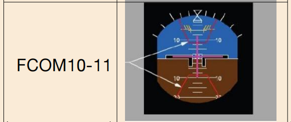
如图FCOM10-11，关于箭头所示的俯仰区域，说法正确的是。
A、红线内的区域指示为解除交通冲突而避免进入的俯仰区
B、该情况只在TCAS测试模式下显示
C、飞机应处于上部红色梯形框内，以避免交通冲突
D、飞机应处于下部红色梯形框内，以避免交通冲突
A
FCOM10161
空速/马赫数表上的花针是：
A、来源于大气数据计算机信号
B、固定不动的
C、可以人工设置的
D、指在仪表最大位置
A
FCOM10162
空速/马赫数表上的桔黄色游标人工设置的标志是：
A、出现警告旗显示
B、仪表顶部显示一“M”
C、马赫窗显示空白
D、无任何显示
B
FCOM10163
备用高度速度表出现故障：
A、出现故障旗显示
B、不会出现故障
C、无任何故障旗显示
D、高度表有故障旗
C
FCOM10164
备用高度速度表信号来源于：
A、大气数据计算机
B、主用气压式高度表
C、一号辅助全压管和备用静压
D、二号辅助全压管和备用静压
D
FCOM10165
EHSI的显示情况：
A、永远显示在MAP方式
B、永远显示全罗盘情形
C、与方式选择开关相关
D、与EADI相关
C
FCOM10166
速度带上出现的小绿圆圈是：
A、开始收襟翼的速度
B、收光襟翼的速度
C、最小机动速度
D、失速速度
B
FCOM10167
气象雷达信息可在EHSI以下方式上显示：
A、MAP，FULL NAV，PLAN
B、EXP NAV，EXP VOR/ILS，MAP
C、FULL NAV，EXP VOR/ILS，MAP
D、FULL NAV，FULL VOR/ILS，PLAN
B
FCOM10168
EHSI扩展NAV方式中心线是以：
A、磁航迹定向
B、真航迹定向
C、磁航向定向
D、真航向定向
A
FCOM10169
EHSI扩展VOR/ILS方式中心线是以：
A、磁航迹定向
B、真航迹定向
C、磁航向定向
D、真航向定向
C
FCOM10170
下面说法正确的是：
A、航路上的航路点是三角型
B、航路外的航路点是三角型
C、航路外的航路点是圆圈
D、航路上的航路点是菱形
B
FCOM10171
下面说法正确的是：
A、生效航路点是蓝色的
B、生效航路点是粉红色的
C、生效航路点都是星型的
D、生效航路点是白色的
B
FCOM10172
T/D是指：
A、下降顶点，在EHSI上的显示是一小绿圈
B、爬升顶点，在EHSI上的显示是一小绿圈
C、下降终点，在EHSI上的显示是一小绿圈
D、下降顶点，在EHSI上的显示是一小白圈
A
FCOM11001
以下哪种方法不可以删除航路点高度限制？
A、通过DLETE功能键按压到草稿栏，在按压相应的航路点数据进行删除
B、通过按压MCP高度干预按钮将删除低于所选MCP高度的最低的FMC高度限制
C、通过按压LVL CHG电门穿越限制高度
D、
C
FCOM11002
关于导航显示颜色和格式表示不正确的是？
A、一条非现用航路或一条现用但未执行的航路显示为深蓝色的虚线
B、现用航路显示为洋红色
C、对现用航路的修改显示为白色虚线
D、执行偏离航路为白色虚线
D
FCOM11003

如图在ＵＮＴＡＮ点９０度方位２０海里造一个点，在草稿栏内应输入？如图FCOM11-01
A、UNTAN90/20
B、UNTAN090/20
C、UNTAN/09020
D、UNTAN9020
B
FCOM11004
关于GPS叙述不正确的是？
A、在地面，FMC以GPS数据为基础计算当前位置。如果GPS数据不可用，FMC以IRS数据为基础计算当前位置
B、飞行前GPS不可用，RNP进近可以放行
C、如果GPS过度更新，在确定GPS位置合理之前，会暂停GPS更新
D、
B
FCOM11005
下列哪些航路点航图上可能没有？
A、固定点
B、ＶＯＲ台
C、条件性航路点
D、
C
FCOM11006
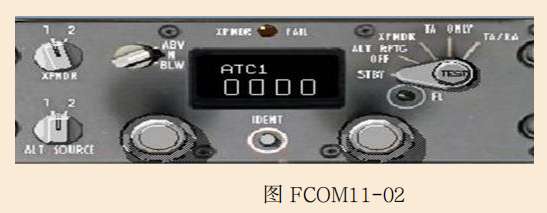
如图FCOM11-02，关于应答机方式选择器位置设定哪个不正确？
A、ＳＴＢＹ不发射
B、ALT RPTG OFF应答机以无高度报告方式工作
C、XPNDR应答机以有高度报告的方式工作
D、TA位可提供交通提示/决断提示信息
D
FCOM11007
下列CDU草稿栏信息显示叙述不正确的是？
A、USING RSV FUEL: 预计到达目的地的燃油小于PERF INIT页面上RESERVES行的输入值；
B、CHECK FMC FUEL QUANTITY :FMC探测到燃油存量意外减少，
C、INSUFFICIENT FUEL:飞抵目的地时预计燃油量少于等于2000磅
D、IRS移动（IRS MOTION）：飞机在移动，无法校准。
D
FCOM11008
飞机建立ＬＮＡＶ，以ＶＮＡＶ方式下降时，关于ＦＭＡ油门栏/横滚栏/俯仰栏的显示变化不正确的是？
A、FMC SPD/LNAV/VNAV PTH
B、RETARD/LNAV/VNAV SPD
C、RETARD/LNAV/VNAV PTH
D、MCP SPD/LNAV/VNAV PTH
D
FCOM11009
下列哪种天气现象，雷达系统无法探测到？
A、雾
B、雨水
C、风切变
D、雷雨
A
FCOM11010
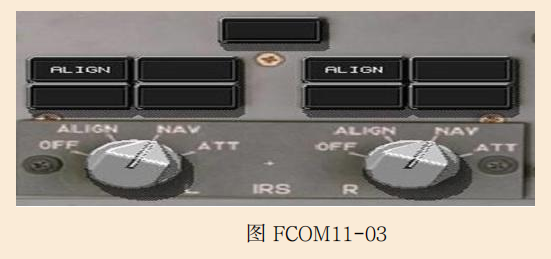
如图，关于IRS方式选择器组件上灯光叙述错误的是？如图FCOM11-03
A、ALIGN白色灯闪亮，可能是CDU中没有输入当前位置
B、FAULT琥珀色灯亮，表明探测到影响相应的IRS ATT和/或NAV方式的系统故障
C、ON DC琥珀色灯亮，可能是相应的IRS 正在使用来自热电瓶汇流条的电，
D、DC FAIL琥珀色亮，表明IRS的相应直流电源不正常
C
FCOM11011
关于CDU行选键功能叙述不正确的是？
A、按压，将草稿栏的数据输入到所选行或将所选行的数据移到草稿栏；
B、按压，选择合适的页面、程序或性能方式；
C、当草稿栏显示DELETE时，删除所选行的数据；
D、按压清除（CLR）键一次可清楚草稿行所有数据
D
FCOM11012

如图，关于ＩＳＤＵ显示选择器位置叙述不正确的是？如图FCOM11-04
A、放在TK/GS左窗口显示磁航迹，右窗口显示当前地速
B、放在PPOS左窗显示当前纬度，右窗显示当前经度
C、放在WIND左窗显示当前飞行中真风向，右窗显示空中当前的风速
D、放在HDG/STS左窗显示当前真航向，右窗显示任一适用的维修状态代码
A
FCOM11013
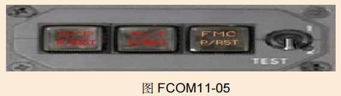
如图所指示的FMC警戒灯琥珀色亮的原因不可能是？如图FCOM11-05
A、在测试开关处在1位或2位时
B、CDU上FAIL灯亮
C、两部CDU上出现警戒信息
D、CDU温度过高
D
FCOM11014
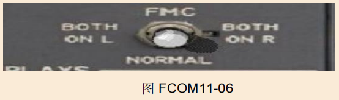
如图，关于FMC源选择开关叙述，哪一个不正确？如图FCOM11-06
A、正常情况放在NORMAL位，左侧FMC控制CDU，右侧FMC与左FMC的工作同步，地图显示来自两部FMC的合成信息；
B、如果放在某一侧，相应一侧FMC执行所有FMC操作，对应一侧地图将显示"FMC L或R”
C、移动源选择开关将会使LNAV和VNAV 断开；
D、移动源选择开关将会使VNAV断开，而LNAV不脱开；
D
FCOM11015
关于ＣＤＵ输入相关叙述不正确的是？
A、方框必须输入
B、虚线可以选择性输入
C、已有数据是不可以修改的
D、
C
FCOM11016
关于ＣＤＵ下列灯光叙述错误的是？
A、MSG白色灯亮，显示草稿栏有信息；
B、OFST白色灯亮，LNAV提供水平的航路偏航引导；
C、CALL白色灯亮，一个非FMC的子系统在请求CDU的控制；
D、FAIL白色灯亮，所选FMC失效。
D
FCOM11017
更新FMC位置的导航传感器，优先级最高的是：
A、GPS
B、两个或更多的DME台
C、带有DME的一个VOR
D、一个航向道信标台
A
FCOM11018
如果FMC收到的燃油数据无效：
A、草稿行中将显示VERIFY GW AND FUEL信息并且需要重复输入燃油重量以便燃油数据和实际一致。
B、不需要重复性输入燃油重量来保持和实际燃油重量一致
C、草稿行可能会显示GW AND FUEL INVAID信息
D、VNAV方式将断开并且VNAV方式将失效
A
FCOM11019
IRS地速数据在FMC的哪一页上显示？
A、CRZ
B、PROGRESS 1/X
C、POS INIT 1/3
D、POS REF 2/3
D
FCOM11020
在IRS 方式选择器上闪亮的ALIGN灯表明：
A、IRS工作在ALIGN方式
B、需要输入飞机现实位置否则校准不能完成
C、以前输入的位置数据和目前输入的显示位置数据无明显差别
D、IRS已经进入了ATT方式
B
FCOM11021
IRS 方式选择器上的FAULT灯亮代表什么含义？
A、输入的现实位置无效
B、IRS不在ALIGN位置
C、相应IRS的直流电源不正常
D、系统探测到存在影响惯导 ATT和/或NAV方式的系统故障
D
FCOM11022
下面哪个部件不属于惯导系统？
A、MSU
B、ADIRU
C、ISDU
D、DU转换选钮
D
FCOM11023
IRS什么时候开始进入NAV方式？
A、当在ALIGN方式时所有正常操作的数据都有效后
B、当方式选择器从ATT位设置到NAV后且惯导校准完成后
C、当方式选择器在NAV位置、现实位置输入后并且惯导校准完成后。
D、当方式选择器从OFF位设置到ALIGN位后10分钟
C
FCOM11024
IRS快速校准过程需要多少时间？
A、10分钟
B、30秒钟
C、1分钟
D、5分钟
B
FCOM11025
在正常导航方式时，下列哪些数据不由IRS提供？
A、真空速和目前时间
B、航迹、现实位置以及风信息
C、加速度、垂直速度和地速
D、姿态、真航向和磁航向
A
FCOM11026
正常情况下将MSU方式选择旋钮从OFF位旋转至下列哪个位置就可起始IRS校准程序？
A、ON
B、ON DC
C、NAV
D、ATT
C
FCOM11027
如果FMC中飞机总重数据无效，在APPROACH REF页上的GROSS WT行将显示什么？
A、在CDU草稿行中显示INVALID
B、闪动
C、无数据显示
D、数据框提示符
D
FCOM11028
FMC所显示的ETA数据是基于什么得到的？
A、根据现用飞行计划和在输入航路点时飞机的性能参数
B、期望的RTA数据并且此数据不能被修改
C、ECON CRZ速度
D、修改的飞行计划
A
FCOM11029
FMC所显示的SELECT MODE AFTER RTA警戒信息的含义为？
A、RTA方式不能选用
B、由于在飞行计划中加入了其它的到达航路点的所需时间从而导致RTA方式结束
C、RTA时间不在最早起飞和最晚起飞时间范围内
D、由于RTA航路点正在排序或RTA航路点已从飞行计划中去掉，RTA方式被中止。
D
FCOM11030
FMC所提供的BUFFET ALERT咨询信息含义是什么？
A、在目前飞行航路上已经探测到了清晰的大气紊流现象
B、当前情况导致了机动裕度小于指定位
C、飞机正好在正常裕度范围内
D、飞机处于接近全失速状态
B
FCOM11031
关于HOLD页面，下面哪一个叙述是正确的？
A、仅显示和等待有关的默认等待数据
B、在HOLD页面上可以修改航路，所修改的数据可以被取消或执行
C、不能使用HOLD页面建立等待
D、和等待方式有关的页面有3种
B
FCOM11032
关于显示在APPROACH REF页面上的VREF速度，下列哪一种叙述是正确的？
A、VREF速度的计算是基于FMC所预计的飞机总重
B、使用双横线可在速度显示中删除VREF速度
C、VREF速度一旦被设定，除非删除目前速度或输入不同的速度数据否则VREF 速度将不能被更新。
D、机组不能修改VREF速度
C
FCOM11033
FMC的横向偏置（OFFSET）功能所允许的最大偏置距离为99.9海里，在有些航段时横向偏置功能无效，在下面哪一种情况下横向偏置功能不能使用？
A、所改变的航路小于135度
B、在现实位置等待期间
C、航路中断
D、处于飞行计划的起始点时
C
FCOM11034
关于显示在CRZ页面中TURB N1下列哪一个叙述正确？
A、TURB N1数据可在CRZ页中选择
B、在CRZ页中通过行选择的方式将TURB N1输入到草稿行中，然后将此数据传输到N1 LIMIT页以备执行
C、TURB N1是所有飞行条件下为确保飞行安全由自动油门所计算的最小N1。
D、TURB N1用于紊流飞行情况，此数据仅用于参考，自动油门不使用此项数据。
D
FCOM11035
什么情况下FMC CDU中会自动显示MOD CRZ CLB页面？
A、当在MCP ALTITUDE显示窗中输入了更高巡航高度后
B、当在CRZ页面中输入了更高的巡航高度后
C、在巡航期间按压了CLB功能键后
D、在CRZ页面上的STEP TO行中输入了一个更高巡航高度后
B
FCOM11036
如果想在最短的水平距离内爬升到所需高度，你应该在下面哪个页面上选择MAX ANGLE方式？
A、PROGRESS
B、CRZ
C、PERF INIT
D、CLB
D
FCOM11037
关于DES NOW提示符下面哪个叙述正确？
A、当在PATH DES页面上人工按压了DES NOW提示符后，提前立即下降将建立，此时油门将处于慢车并且飞机目标速度是通过俯仰来维持。
B、当在PATH DES页面上人工选择了DES NOW提示符后，PATH提前下降立即建立，飞机将起始保持1000英尺/分钟的PATH DES方式直到所计划的下降剖面截获为止。
C、当进入下降阶段后 DES NOW显示在DES页中
D、当PATH DES方式不工作时，在任何SPD DES页上无此提示符显示
B
FCOM11038
显示在PROGRESS第一页上的燃油量是：
A、仅显示中央油箱油量
B、仅显示机翼油箱油量
C、基于输入到FMC中的燃油流量所计算出的自发动机启动后的总已耗燃油量
D、直接从飞机燃油量指示系统来的总剩余油量
D
FCOM11039
当在南、北纬78度15分之间校准IRS时，下面哪一个叙述正确？
A、不需要输入飞机现实位置
B、应将MSU旋钮从OFF位设置到ALIGN位
C、根据飞机所处的纬度的不同惯导校准完成所需时间一般在5到17分钟之间
D、当ON DC灯亮和ALIGN灯熄灭时惯导校准程序开始
C
FCOM11040
关于标准仪表离港航路下列哪一个叙述正确？
A、不能在RTE页面上输入
B、所选机场和跑道的离港航路显示在DEPARTURES页面上
C、只有在RTE页中选择了跑道后离港航路才能显示在DEPARTURES页上
D、FMS数据库中没有离港航路数据
B
FCOM11041
关于SELECT DESIRED WPT 页下列哪一个叙述正确？
A、当选择了一个航路点时将显示
B、用来选择沿航路的每个航路点
C、当FMS中出现多个具有相同航路点代码的航路点时自动出现
D、当在草稿行中输入航路点时自动出现
C
FCOM11042
什么时候RTE LEGS页面上会出现BYPASS提示信息？
A、当存在飞机不能满足的强制高度限制时
B、当存在航路中断情况时
C、当飞机不可能转弯并截获飞向下一个航路点航段时
D、当机组决定环绕现用航路点飞行时
C
FCOM11043
在RTE LEGS页面标题上显示MOD代表什么？
A、MOD代表超过最小操作距离的数量
B、目的地是MODESTO
C、航路已经被修改但还没有执行
D、航路已经被修改但不能被改变
C
FCOM11044
飞行中如果出现发动机失效：
A、VNAV方式将立即断开并且此方式不可能再次被接通
B、执行了ENG OUT CRZ页后VNAV方式将断开，并且所有后续性能计算都失效。
C、执行了ENG OUT CRZ页后VNAV方式将断开，并且在重新接通VNAV方式前应先再次输入所有性能数据。
D、在ENG OUT CRZ页中只提供数据显示并且EXEC 灯不亮
D
FCOM11045
关于LNAV方式的下列叙述哪一个正确？
A、当飞机偏离LNAV航线在3海里以内，和/ 或飞机的切入航向小于等于90度并且在现用航路点之前能截获航路情况下LNAV 方式将接通。
B、如果飞机横向偏离LNAV航线在5海里以内时LNAV方式将接通
C、如果飞机的切入航向是90度或更大，可在不考虑LNAV航线偏离大小的情况下LNAV方式可待命。
D、如果飞机截获航向小于等于120度并且能在现用航路点之前截获时LNAV方式将接通
A
FCOM11046
什么范围内的磁差信息储存在每个IRS存储器中？
A、在北纬73度到南纬60度之间
B、在北纬70度15分到南纬70度15分之间
C、在北纬78度25分到南纬78度25分之间
D、在北纬82度到南纬82度之间
D
FCOM11047
IRS仪表转换电门位于哪一面板上？
A、前仪表板上
B、遮光板上
C、前顶板上
D、后电子板上
C
FCOM11048
ND的哪些显示方式不提供气象雷达信息显示？
A、MAP方式中心位，计划方式
B、计划、进近方式中心位，VOR方式中心位
C、进近和VOR方式
D、进近和VOR方式中心位，地图方式中心位
B
FCOM11049
FMC电源中断，当电源恢复后，什么情况下，必须重新完成所有的飞行前程序和输入值？
A、电源中断少于10秒
B、在地面失去电源达10秒或更长时
C、在空中失去电源超10秒
D、
B
FCOM11050
以下选项中，哪个不是惯性系统的主要部件？
A、大气数据惯性基准组件（ADIRU）
B、惯性基准系统显示组件（ISDU）
C、仪表显示组件（IDU）转换电门
D、惯性基准系统方式选择组件（MSU）
C
FCOM11051
ADI上显示的GS(地速)来自：
A、动静压系统
B、全球定位系统
C、惯性基准系统
D、
C
FCOM11052
FMC的CDU上显示"DRAG REQUIRED"表示：
A、减速板故障
B、飞机速度大于FMC的目标速度10海里／小时（含）或者在Vmo/Mmo的5海里/小时范围之内
C、飞机速度大于FMC的目标速度5海里/ 小时（含）或者在Vmo/Mmo的5海里/小时范围之内
D、
B
FCOM11053
FMC的CDU上显示“USING RSV FUEL”表明：
A、FMC探测到燃油意外消耗
B、燃油系统有故障
C、飞机到目的地机场的剩余油量少于在性能起始页面上输入的备份油量
D、飞机到目的地机场的剩余油量少于900公斤
C
FCOM11054
FMC警戒信息“SELECT MODE AFTER RTA”表示不正确的是：
A、由于RTA航路点重新排序，RTA方式被中断。
B、在RTA航路点之后的航路需要选择经济速度方式
C、由于从飞行计划中取消了RTA航路点，RTA方式被中断
D、
B
FCOM11055
FMC的CDU上显示"INSUFFICIENT FUEL"警告信息时，表示：
A、飞机到目的地机场的剩余油量少于在性能起始页面上输的备份油量
B、因条件或飞行航路的改变导燃油量已经不足以使飞机飞抵目的地机场
C、因条件或飞行航路的改变导致飞机到达目的地时机场的预计燃油只有2000 磅/900KG或更少
D、因条件或飞行航路的改变导致飞机到达目的地时机场的预计燃油只有1000磅/453KG或更少
C
FCOM11056
在什么高度，FMC会自动将减推力爬升设置值逐渐增加到全额爬升推力？
A、10000英尺
B、12000英尺
C、15000英尺
D、18000英尺
C
FCOM11057
FMC警戒信息“VERIFY POSITION”指示：
A、飞机偏离飞行计划航路超过4海里
B、位置信息不一致（在地面）
C、飞机偏离飞行计划航路超过3.5海里
D、只在空中才会出现
B
FCOM11058
惯导方式在ATT位可以提供哪些信息：
A、仅姿态信息
B、仅航向信息
C、姿态和航向信息
D、仅高度信息
C
FCOM11059
下降页面中的飞行航径角(FPA)是根据哪个因素计算出来的?
A、当前地速和垂直速率
B、速度和高度
C、当前地速和高度
D、垂直速率和高度
A
FCOM11060
复飞时，按压复飞电门后，FMC自动输入一个新的巡航高度，即
A、MCP高度
B、复飞中最高的限制
C、高于机场标高1500英尺
D、其他选项中的最高值
D
FCOM11061
关于单发巡航页面的最大高度，下面哪个说法是对的?
A、是单发巡航页面生效时飞机所在的实际飞行高度
B、在单发的情况下保持最大连续推力直到上升率为零时所能到达的最大高度
C、是指在这个高度，一台发动机使用最大连续推力可以获得公司指定的爬升率
D、
C
FCOM11062
将某一航路点的速度和高度限制输入在CDU的哪个页面上?
A、性能页面
B、航路页面
C、航段页面
D、航路数据页面
C
FCOM11063
如果CDU显示"VERIFY GW AND FUEL"，你应该：
A、在进近参考页面输入飞机全重
B、在性能起始页1/2面输入燃油重量。需要定期更新燃油重量以保持总重正确有效
C、燃油不足，应就近机场着陆
D、减少发动机推力
B
FCOM11064
如果FMC收到的燃油数据无效,将会看到什么指示？
A、草稿行中将显示VERIFY GW AND FUEL信息并且性能起始燃油值会显示一条虚线。需要定期人工输入更新燃油重量以保持总重正确有效。
B、草稿行中将显示VERIFY GW AND FUEL信息并且性能起始燃油值会显示一条虚线。FMC会使用上次有效的燃油量进行性能预算。无需人工输入燃油重量。
C、草稿行中可能会显示GW AND FUEL INVAID信息
D、CDU上显示“CHECK FMC FUEL QUANTITY”信息
A
FCOM11065
使用假设温度减推力起飞，通过在哪个页面输入选择温度可以获得所需的起飞推力。
A、起飞基准页面1／2
B、性能页面
C、N1限制页面
D、N1限制页面或起飞基准页面2／2
D
FCOM11066
在CDU上的哪个页面可查到FMC和惯性基准系统的地速?
A、航路数据页面
B、进程页面3／3
C、位置基准页面2／3
D、导航数据页面1／1
C
FCOM11067
当两部FMC失效后，对于水平导航和垂直导航，下列哪个说法是对的?
A、水平导航和垂直导航不受影响
B、水平导航不受影响，垂直导航脱开
C、垂直导航不受影响，水平导航脱开
D、水平导航和垂直导航都会脱开
D
FCOM11068
减速点在地图上显示为绿色的开口圆圈并标有“DECEL”。减速点在下列情况前不显示：
A、空速限制航路点
B、等待航线
C、进近放出襟翼
D、最终进近阶段
D
FCOM11069
气象雷达处于WX+T方式下，在____内显示颠簸。
A、160 海里
B、120 海里
C、80 海里
D、40 海里
D
FCOM11070
惯性基准系统方式选择电门转至关位时，在多长时间的关断循环后系统所有电源断电
A、10 秒
B、30 秒
C、60 秒
D、90 秒
B
FCOM11071
航径下降过程中，高于或低于速度限制的高度时，FMC警戒信息“OVERSPEED DISCONNECT”表示：
A、由于空速超过FMC速度限制15海里/小时以上，VNAV已经脱开
B、由于速度过大，FMC已经脱开自动油门
C、空速达到VMO减5海里/小时以内，VNAV已脱开
D、由于空速超过FMC速度限制10海里/小时以上，VNAV已经脱开
A
FCOM11072
FMC性能限制页中各飞行阶段速度限制的上限默认值是：
A、320／．820
B、320／．780
C、340／．820
D、320／．780
C
FCOM11073
FMC 定位点信息页面的作用错误的是：
A、识别航路点定位并显示在导航显示上
B、在航路中按需显示定位点信息
C、通过INFO（信息）键进入定位点信息页面
D、
C
FCOM11074
在地面，听到前轮舱的地面呼叫喇叭响，而且惯导方式控制面板上的“ON DC”灯亮，说明：
A、惯导正在使用电瓶汇流条的DC 电源
B、惯导正在使用转换的热电瓶汇流条的DC 电源
C、表明直流电源故障且未向惯导系统供电
D、
B
FCOM11075
下列哪项不是飞行管理系统（FMS）的组成部分:
A、飞行管理计算机系统（FMCS）
B、自动驾驶/ 飞行指引仪系统（AFDS）
C、自动油门（A/T）
D、ACARS系统
D